Cómo administrar usuarios y sedes, cargar el inventario una sola vez, contar desde los teléfonos y descargar los resultados.
App de conteo (teléfonos y PC):https://conteos.grupopanaceapremium.com
Panel central (PC):https://conteos.grupopanaceapremium.com/admin/
Contenido
Cómo funciona
Entrar al panel central
Sedes
Crear un usuario
Cambiar claves
Crear una toma
Cargar el inventario
Contar desde el teléfono
Items Facturados y cierre
Ver y descargar resultados
Problemas frecuentes
Las imágenes de esta guía usan datos de demostración.
1. Cómo funciona
Toda la información vive en un servidor central. El inventario se carga una sola vez y cada teléfono lo descarga. Cada persona cuenta en su teléfono, incluso sin internet, y su conteo se sube solo cuando hay señal. El administrador ve todo junto, en la app y en el panel.
1. Crear tomaSede y fecha, en el panel.
2. Cargar inventarioExcel de Plade, una sola vez.
3. ContarCada teléfono, con o sin señal.
4. Items FacturadosAl terminar de contar.
5. ResultadosCierre, Excel, PDF y ajustes.
Perfiles
Perfil
Sedes
Existencia del sistema
Resultados
Puede
Inventarista
Solo las asignadas
Nunca (no la recibe)
No
Contar y ver solo lo que él contó
Gerente
Solo las asignadas
Con la toma cerrada
Con la toma cerrada
Crear tomas y cargar reportes de su sede; ver el conteo del equipo
Auditor general
Todas
Siempre
Siempre
Ver todo, sin modificar
Administrador
Todas
Siempre
Siempre
Todo, incluidos usuarios, sedes y cierre de tomas
El inventarista cuenta a ciegas: el servidor no le envía la existencia ni el costo, así que no puede “cuadrar” el conteo.
2. Entrar al panel central
En la PC abre https://conteos.grupopanaceapremium.com/admin/.
Escribe tu usuario y contraseña y pulsa Entrar. El panel es para administradores, auditores y gerentes; los inventaristas solo usan la app.
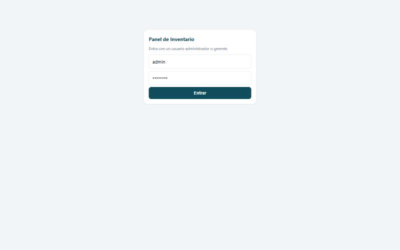
Pantalla de entrada del panel.
Arriba tienes las pestañas Tomas, Usuarios, Sedes y Actividad, el botón 📱 Abrir la app, 🔑 Mi clave y Salir.
3. Sedes
La pestaña Sedes tiene el catálogo central con las 15 sedes. Es la misma lista que aparece al crear tomas y al asignar sedes a los usuarios, en el panel y en los teléfonos.
Agregar: escribe el nombre como Nombre · Ciudad y pulsa ➕ Agregar sede.
Quitar: si la sede ya tiene tomas o usuarios, solo se desactiva y se conserva su historial. Se puede Reactivar.
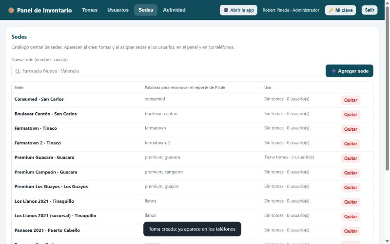
Catálogo de sedes.
4. Crear un usuario
En el panel abre la pestaña Usuarios y pulsa ➕ Nuevo usuario.
Escribe Nombre y apellido, el Usuario con el que entrará (sin espacios, por ejemplo ana.rodriguez) y una Contraseña de al menos 4 caracteres.
Elige el Perfil: Inventarista, Gerente de sede, Auditor general o Administrador. Los permisos se marcan solos según el perfil; puedes ajustarlos para esa persona.
Para Inventarista y Gerente marca al menos una sede. Solo verán las tomas de esas sedes. El Auditor y el Administrador ven todas.
Pulsa Guardar. Entrega a la persona su usuario y contraseña.
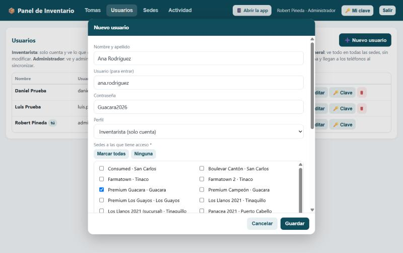
Nuevo usuario: perfil Inventarista con la sede Premium Guacara.
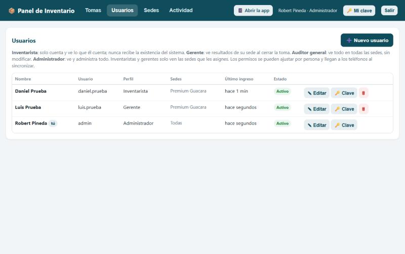
Lista de usuarios con su perfil, sedes y último ingreso.
Para que alguien deje de entrar sin borrar su historial, abre ✎ Editar y desmarca Usuario activo. Los cambios de permisos llegan a los teléfonos al sincronizar.
5. Cambiar claves
Poner la clave que quieras a otra persona
En Usuarios pulsa 🔑 Clave en la fila de la persona.
Escribe la nueva clave dos veces (marca Mostrar claves para verla) y pulsa Guardar clave.
Su sesión se cierra en los teléfonos y deberá entrar con la clave nueva.
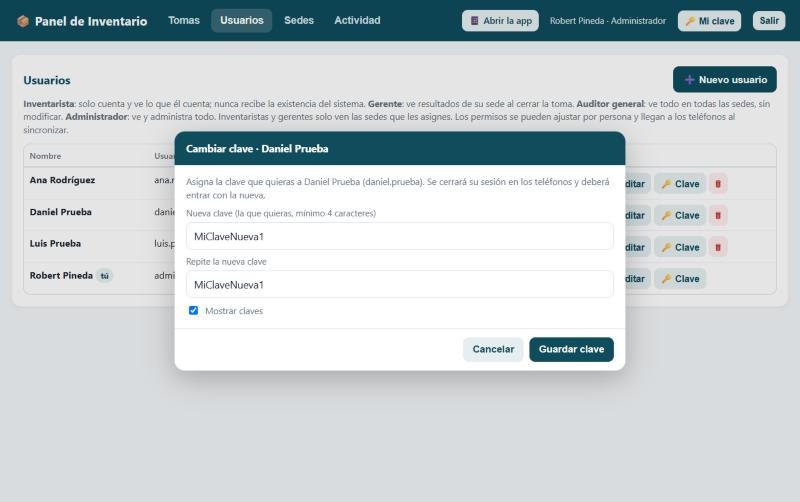
Cambiar la clave de otro usuario.
Cambiar tu propia clave
En el panel pulsa 🔑 Mi clave (arriba a la derecha), escribe la clave actual y la nueva dos veces. En la app: Inicio → 🔑 Mi contraseña.
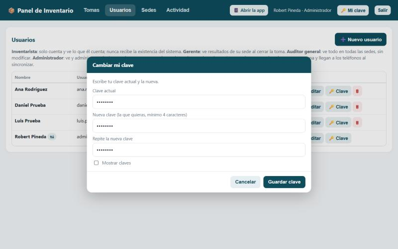
Cambiar mi clave.
6. Crear una toma
En la pestaña Tomas del panel elige la Sede en la lista desplegable.
Indica la Fecha del conteo y pulsa ➕ Crear toma.
La toma aparece de inmediato en los teléfonos de las personas asignadas a esa sede.
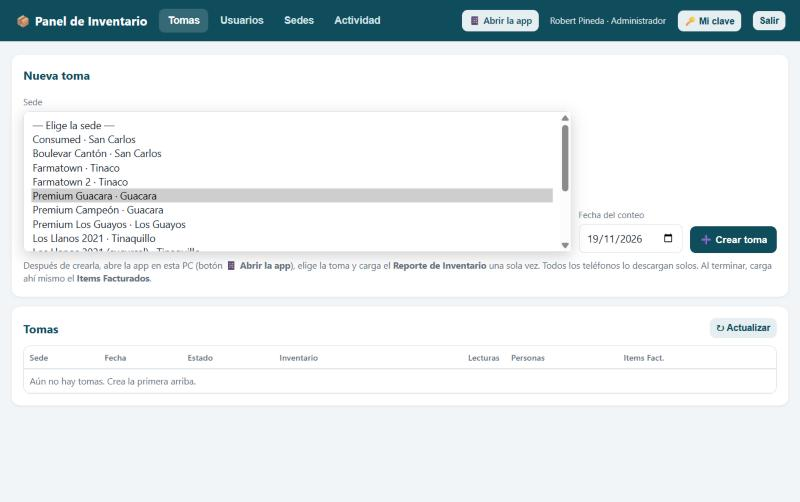
Selector de sedes al crear la toma.
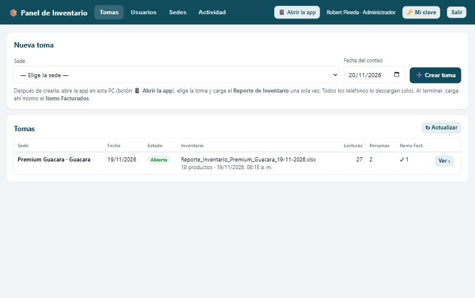
Lista de tomas: estado, inventario cargado, lecturas, personas e Items Facturados.
7. Cargar el inventario (una sola vez)
El Reporte de Inventario se carga desde la app, que también funciona en la PC. Al cargarlo se sube al servidor y todos los teléfonos de la toma lo descargan solos.
En Plade exporta el Reporte de Inventario a Excel justo antes de empezar a contar.
En el panel pulsa 📱 Abrir la app y entra con tu usuario.
En “¿Qué toma vas a trabajar?” pulsa Abrir en la toma.
En Inicio pulsa 📂 Cargar Reporte de Inventario y elige el Excel. La app reconoce el formato de Plade y revisa que la sede y la fecha coincidan con la toma.
Verás el archivo, la hora en que se generó y la cantidad de productos, con el aviso “En el servidor central”.
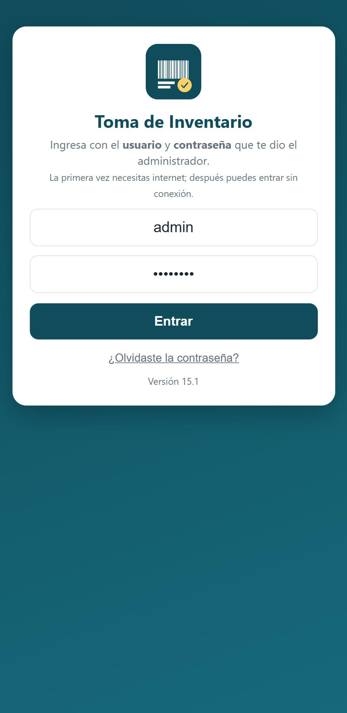
Entrar a la app.
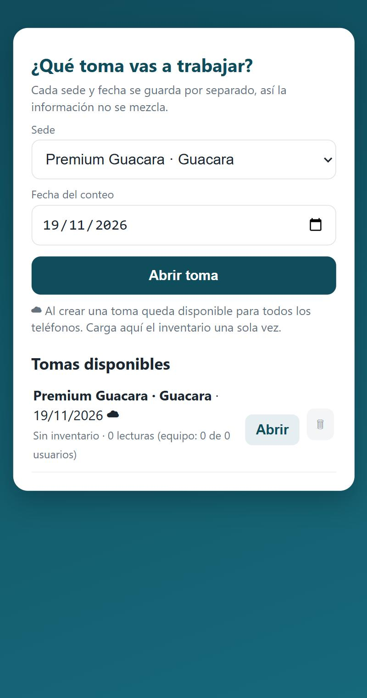
Elegir la toma.
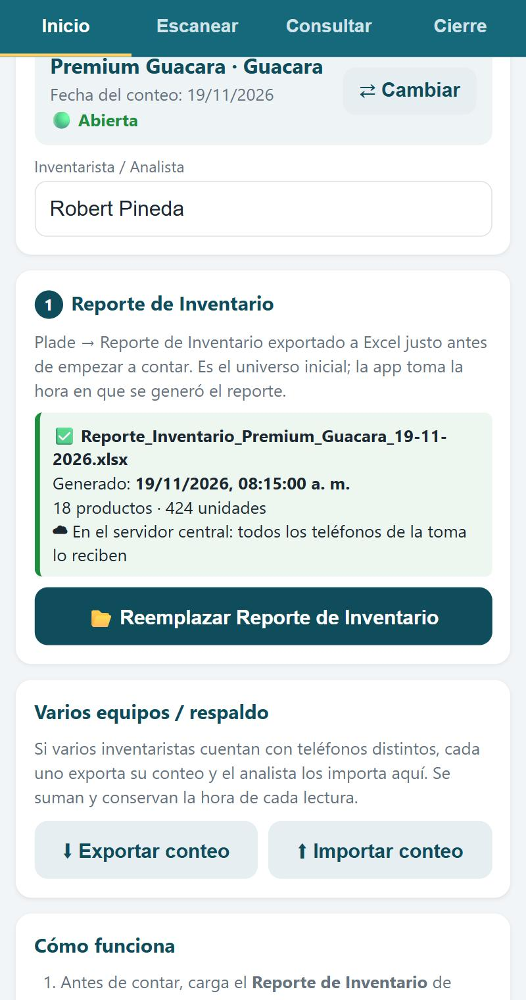
Inventario cargado y subido.
Si reemplazas el inventario, los Items Facturados que ya estaban cargados se borran y hay que volver a cargarlos.
8. Contar desde el teléfono
Abre https://conteos.grupopanaceapremium.com en el teléfono. En Chrome usa ⋮ → Instalar app (o “Agregar a pantalla de inicio”) para tenerla como aplicación.
Entra con tu usuario. La primera vez necesitas internet; después puedes entrar sin conexión.
En Tomas asignadas pulsa Abrir: el teléfono descarga el inventario.
En Escanear lee los códigos con el lector o con la cámara 📷. Cada lectura suma 1 (o la cantidad indicada). Marca Escribir la cantidad en cada lectura para teclear cuántas unidades contaste.
Si te equivocas usa ↶ Deshacer, la ✕ de la lectura o ✎ Cantidad.
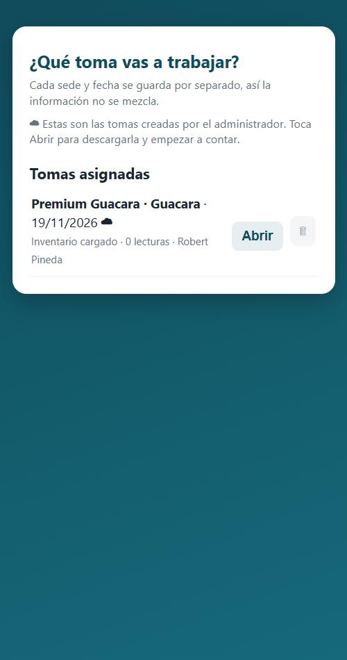
El inventarista solo ve sus tomas.
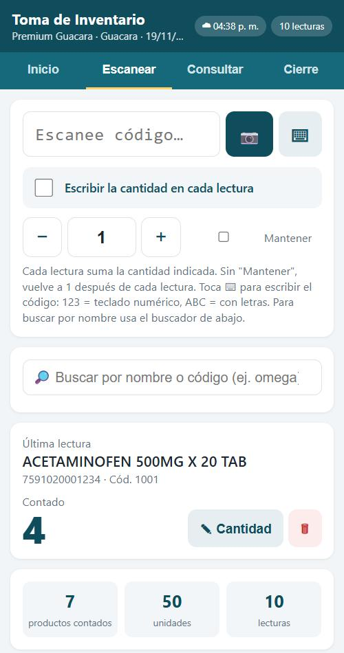
Escanear y contar.
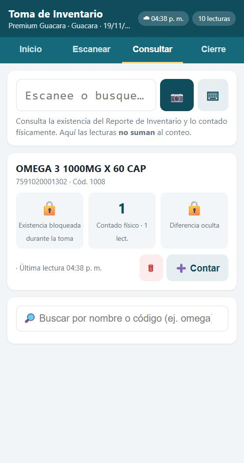
Consultar: la existencia está bloqueada.
Sincronización
El indicador arriba a la derecha muestra el estado: ☁ hora = todo subido; ⏳ Pendiente = hay lecturas por subir; 📴 Sin señal = se guarda en el teléfono y se sube sola al volver la señal. Al tocarlo se sincroniza en el momento.
No hace falta exportar ni enviar el conteo por WhatsApp: el administrador lo recibe automáticamente.
9. Items Facturados y cierre
Cuando todos terminen de contar, exporta de Plade el Items Facturados del día.
En la app (administrador o gerente) ve a Cierre y pulsa 📂 Cargar Items Facturados. Se sube al servidor.
La app descuenta lo vendido durante la toma y muestra el resultado consolidado de todos los teléfonos.
Pulsa 🔒 Cerrar toma. Con la toma cerrada ya nadie puede contar ni cambiar reportes. También se puede cerrar o reabrir desde el panel.
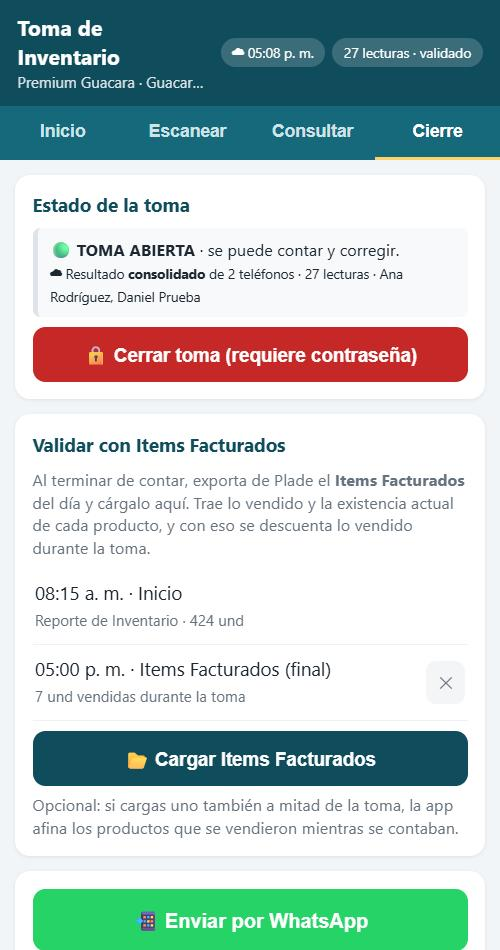
Items Facturados cargado y conteo consolidado.
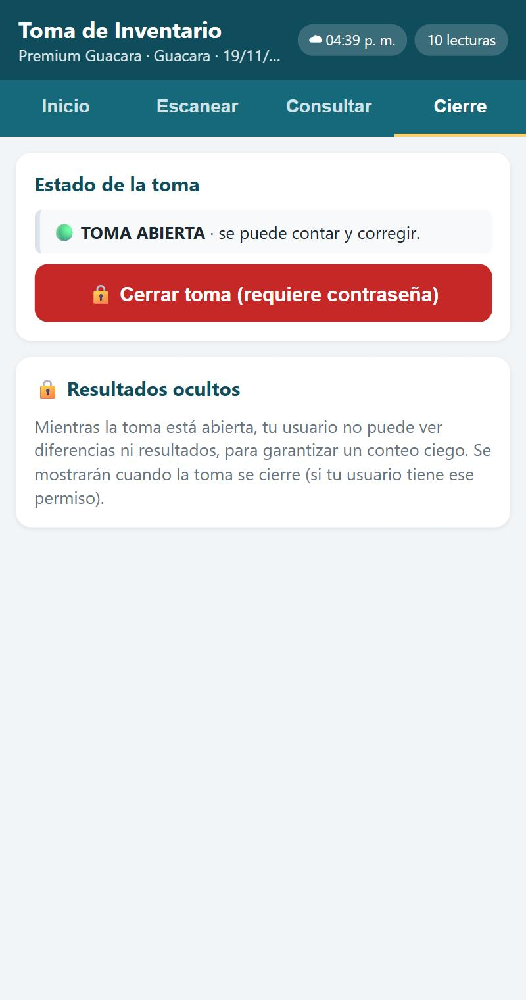
Lo que ve el inventarista: resultados ocultos.
10. Ver y descargar resultados
En la app (Cierre)
⬇ Excel completo: resumen, diferencias por código, resultado completo y todas las lecturas.
📄 PDF del conteo y 📲 Enviar por WhatsApp.
Ajustes para Plade: archivos de SALIDA (faltantes) y ENTRADA (sobrantes) listos para cargar.
Más abajo, la tabla de productos con filtros: Contados, Con diferencia, Faltantes, Sobrantes, No contados…
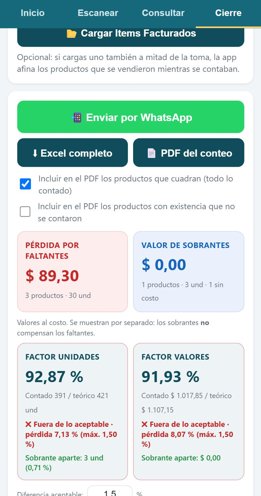
Botones de descarga, pérdida y factores.
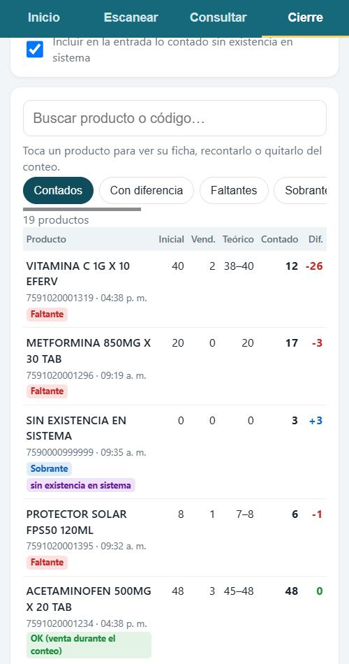
Diferencias por producto.
En el panel central
En Tomas pulsa Ver › en la toma.
Verás los totales, quién está contando (lecturas y última subida de cada teléfono) y la tabla de productos con lo que contó cada persona. Se actualiza sola cada 15 segundos.
Pulsa ⬇ Excel consolidado para descargar un Excel con dos hojas: Consolidado (producto, existencia, contado, diferencia, valor, estado y lo contado por cada persona) y Personas.
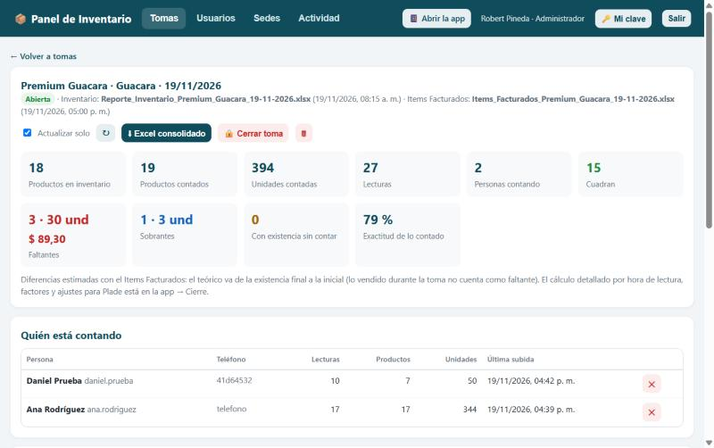
Detalle de la toma con el botón Excel consolidado.
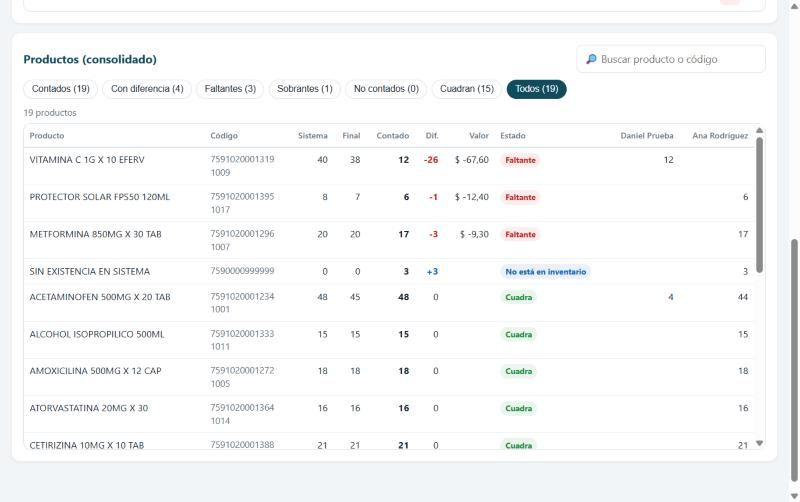
Productos consolidados, con columna por persona.
Las diferencias del panel son estimadas con el Items Facturados. El cálculo detallado por hora de lectura, los factores y los ajustes para Plade están en la app → Cierre.
11. Problemas frecuentes
Situación
Qué hacer
El teléfono no tiene señal
Sigue contando: todo se guarda en el teléfono y se sube solo al volver la señal (indicador ⏳ / 📴).
“Tu sesión venció”
Cierra sesión (Inicio → 🔒 Cerrar sesión) y entra de nuevo con internet. No se pierde nada de lo contado.
Olvidé mi contraseña
Pide al administrador que te asigne una nueva desde el panel (Usuarios → 🔑 Clave).
No aparece la toma en el teléfono
Revisa en el panel que la persona tenga asignada esa sede y que la toma esté creada. Luego toca ⇄ Cambiar en la app para recargar la lista.
“La toma está cerrada en el servidor”
Se cerró la toma; las lecturas nuevas no se suben. Si hace falta seguir contando, el administrador la reabre.
La PC no abre la página (“no se encontró la dirección”)
Si usas VPN, reconéctala o desactívala un momento, y en Chrome abre chrome://net-internals/#dns → Clear host cache.
Falta una sede
Agrégala en el panel → Sedes y asígnala a los usuarios.